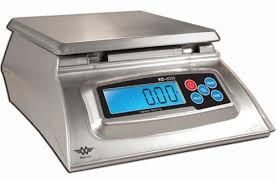

Most Important
Digital Kitchen Scale
If you buy one thing first, make it a scale that reads in grams. It makes starter feeding, hydration, and recipe consistency much easier.
- Measures in grams
- Easy to tare between ingredients
- Helpful for starter and dough accuracy